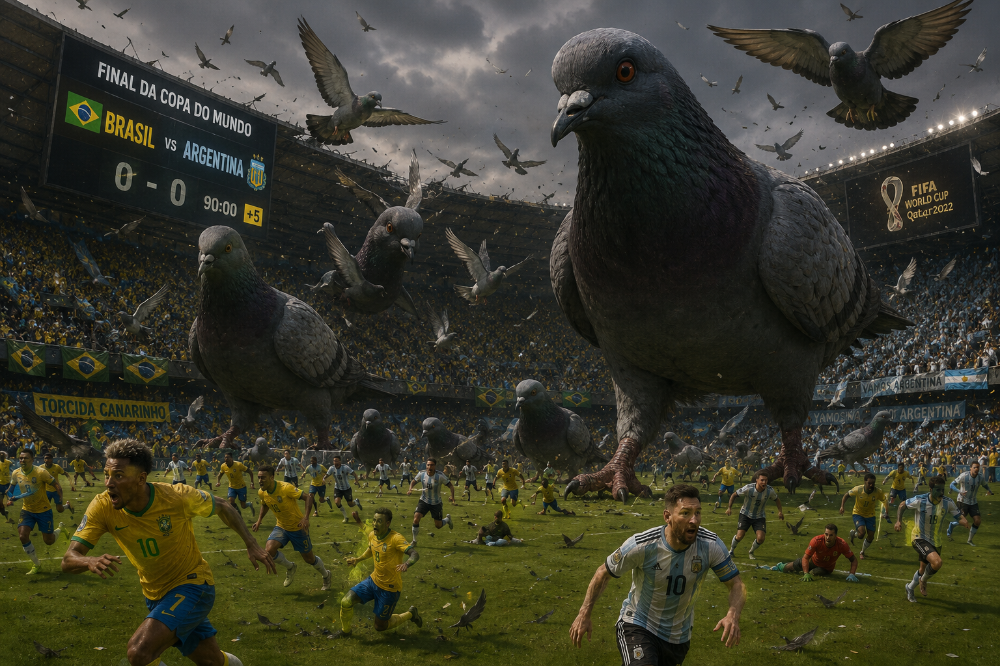

CHOCADA! O FINAL DA COPA DO MUNDO ACABA COM A INVASÃO DE POMBOS GIGANTES.
Por:Andressinha Urach
Neste domingo, final de copa do mundo, pombos gigantes invadem o campo minutos antes do inicio da partida. Segundo rumores, as aves teriam sido treinadas por brasileiros para perseguir o time adversario, e garantir a vitoria do Brasil, a FIFA publica nota apos as aves cagarem nas cabeças dos argentinos e eles jogarem inteiros sujos, e ainda sim perdendo para o Brasil de 5x1. Lucas Paqueta se pronuncia dizendo que achou foi pouco